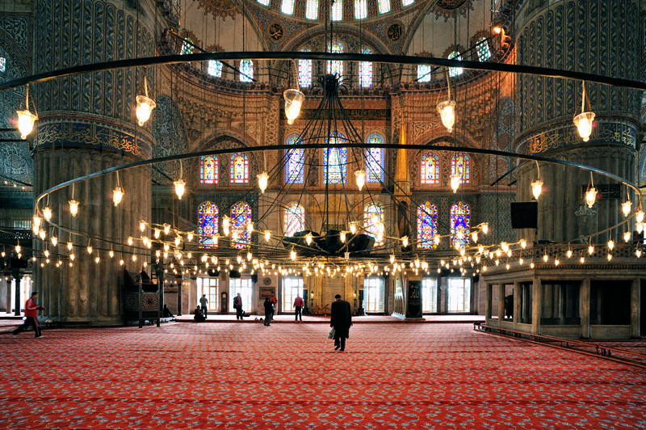
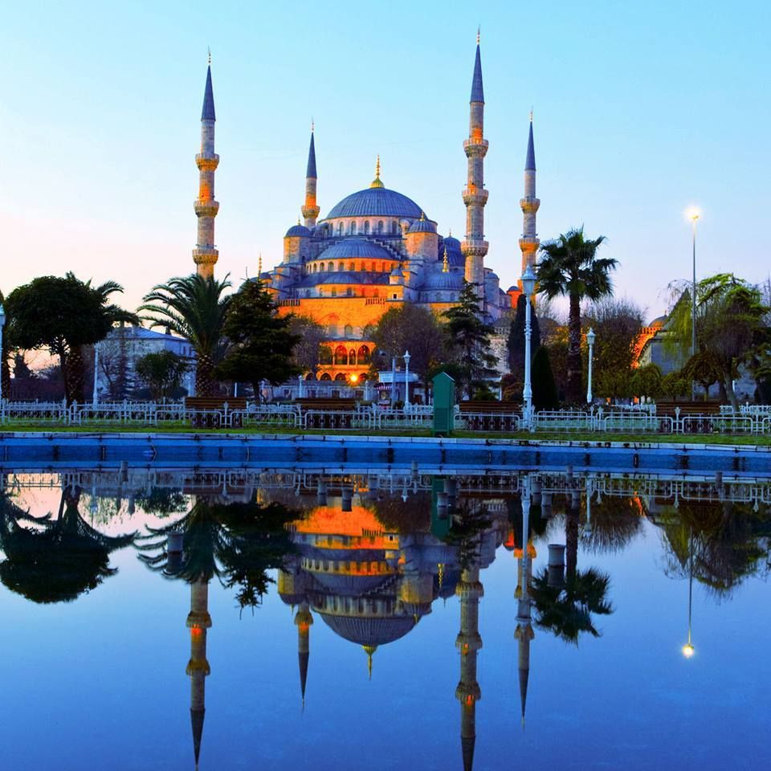
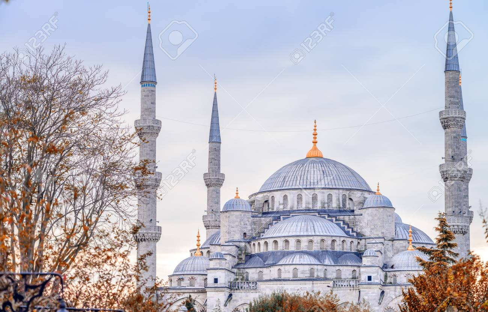
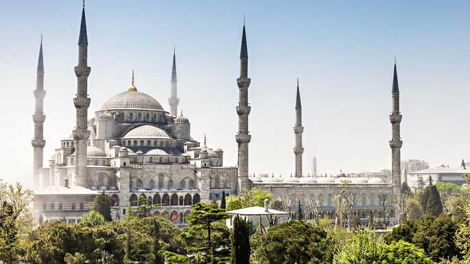
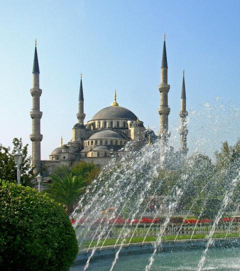
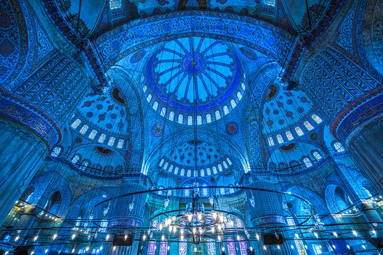
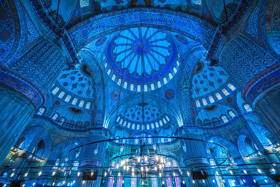

La Mosquée Bleue, Sultanahmet Camii en turc, se situe dans le quartier de Sultanahmet à Istanbul. Il s'agit de la mosquée la plus connue d'Istanbul. Elle fut construite par l'architecte Sedefhar Mehmet Aga, entre 1609 et 1616 sous le règne du Sultan Ahmet I et est pressentie comme étant le dernier ouvrage de l'architecture ottomane sous sa forme classique.
   La Mosquée Bleue tient son nom du fait qu'elle comporte environ 20 000 carreaux de faience bleue d'Iznik. Elle fut la seconde mosquée au monde, après celle de la Mecque, à posséder six minarets. A l'intérieur de la Mosquée Bleue, l'immense salle de prière est couverte par un grand nombre de tapis. Ses décorations intérieures sont de toute beauté. En effet, plus de 260 fenêtres et 20 000 carreaux de faience bleue d'Iznik la composent. A l'extérieur de la Mosquée, la cour est composée d'une fontaine centrale et est entourée par de nombreuses arcades voûtées. La Mosquée est accessible au public, tous les jours, en dehors des heures de prière.
 


Découvrez l'un des monuments les plus mythiques d'Istanbul!